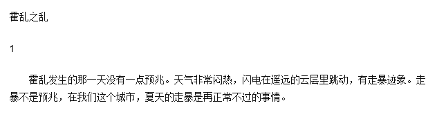

武汉兴建方舱医院、各大城市防控越发严格，以及 30 条疫情新闻
原文链接 备份链接 疫情发展 根据丁香医生实时数据，截至 2020 年 2 月 4 日 18 时，全国累计确诊病例 20520 例，疑似病例 23214 例。较昨日，新增确诊病例 3284 例，新增疑似病例 5027 例。其中， …

唯一的方式就是隔离，继续隔离，将隔离进行到底。
口述 | 池 莉
**整理 | 何映宇**

今天只有一个强烈的呼吁——已经呼吁多天了，要采取切实隔离措施与行动到社区！人们为了买食品蔬菜还在超市拥挤，极容易造成再次感染传播。今是武汉封城隔离第十三天了，明天就满了十四天最长潜伏期，但武汉疫情还在蔓延攀升。为什么不能“配给制”送菜到社区？公交车和单位公车都闲置着，为什么不动用全社会力量进行彻底隔离？纵然有再多医疗支援，抵挡得了烈性传染病的不断再传播吗？！
眼下新型冠状病毒爆炸式的传播方式，是教科书上都没有见过的。对待烈性传染病，唯一的方式就是隔离，继续隔离，将隔离进行到底。所有隔离家庭急需的粮食蔬菜，我建议有条件的社区，直接从蔬菜公司的田间地头或者仓库送到各个社区，然后以“人不见人”的方式扫码交易，老弱病残家庭的粮食和蔬菜，由社区工作人员送上楼；没有条件的社区居民，可以通过网络寻找到活跃在附近社区的骑手小哥，依然以“人不见人”的方式付费交易，请他们把粮食和蔬菜送到家门口。
“霍乱发生的那一天没有一点预兆。天气非常闷热，闪电在遥远的云层里跳动，有走暴迹象。走暴不是预兆，在我们这个城市，夏天的走暴是再正常不过的事情。”这是我写的《霍乱之乱》的开头。

《霍乱之乱》写于1997年5月21日的汉口，发表于1997年第六期《大家》杂志，这是来自于我个人专业工作经历的小说。我曾经做了三年的流行病防治医生，当我不得不离开卫生防疫部门的时候，我觉得我应该把自己的担忧写成一部小说：人类尽可以忽视流行病，但是流行病不会忽视人类。我们欺骗自己是需要付出代价的。
今年，我亲身经历了这样的“代价”。
2020年1月22日夜将近23点的时候，单位突然来电话，紧急通知：从明天起，武汉市民实施隔离。我立即将家中食品蔬菜分为十四天的等分，每天少吃一点，吃得尽量简单一点，争取不要因为买菜而必须外出。但让我痛心的是，我看到不少人因食品短缺，去超市买菜，超市里可怕的是人与人接触，会造成再次传播与扩散，直接影响你和家人以及他人的生命安全，很可能导致武汉隔离前功尽弃。所以我在自己的生活小区微信群里发出了《给物业与业主的6条建议》，建议大家管住双腿，共同努力。我学过公共卫生，参加过流行病封锁隔离防治。我知道流行病最基本、也是最根本的专业知识就是——早发现、早隔离才能最有效防止病毒传播！尽管今天科技发达，这还是迄今为止最有效的传统方式。只有让病毒吃不到人，这种新型冠状病毒才可能慢慢被饿死！
我现在是所在生活小区的一名热心义工。最近的我比平时的写作生活更加忙碌。我觉得在大难面前，人人都要有慈悲怜悯之心，在保护好自己的同时要竭尽所能帮助他人，做一些具体有用的、对防疫有利的事情。
在这场天灾面前，我们每一位市民都要反思：我曾经做错了什么？我生活方式的对与错在哪里？我怎样与大自然相处的？我为什么非要吃野味？这次疫情公布是否有延误？应该如何纠正补过？只有有效的、深入的反思才能不让悲剧再次发生。
发生于武汉的新型冠状病毒感染的肺炎疫情，至今仍未得到有效控制并已向全国扩散，这是相当严重的疫情了，已经到了非常危急的时刻，这绝不是危言耸听！但还是有人没有意识到这一点。
这个时候我们需要的不是宣泄情绪，讲大道理，也不需要高调的口号，需要的是我自己应该怎么做，才能够对防疫有利。这段时间，我也看到还有人以爱的名义、情的借口，大肆地泛滥爱与情。爱与情，都是好东西，然而绝对不可以滥用。这是一场战争，战争必须让廉价的爱与情走开！唯有将严格隔离坚持到底，人类才有可能赢得胜利！
征集令
“战疫”成败，匹夫有责。
《新民周刊》现面向全国征集新冠肺炎采访对象和真实故事：
如果你是参与抗击新冠肺炎疫情的医护人员或其家属，我们希望聆听你的“战役”故事，也希望传达你的诉求。
如果你是确诊、疑似患者本人或家属，我们希望了解你和家人如何“抗疫”的过程，让外界了解你的真实经历。
如果你是疫情严重地区的普通市民，我们希望展现你的乐观，并倾听你所需的帮助。
如果你是公共服务人员或各类捐助者，我们希望看到你的“最美逆行”，记录下你的无私。
……
抗击新冠肺炎疫情，我们诚征对疫情了解的社会各界人士，提供相关线索，说出你的故事，让我们用新闻留存这一切。
《新民周刊》新冠肺炎线索征集值班编辑联系方式（添加时请简要自我介绍）：
周一：应 琛 微信号：paulineying0127
周二：金 姬 微信号：gepetta
周三：黄 祺 微信号：wxid_bf5mudid7oz322
周四：周 洁 微信号：asyouasyou
周五：孔冰欣 微信号：kbx875055141
周六：吴 雪 微信号：shyshine1105
周日：姜浩峰 微信号：jianggeladandong
新闻是历史的底稿，你们是历史的见证者。期待你的故事、你的线索！

▼
大家还都在看这些
▼
转载请在评论区留言，获得授权！
转载时，须注明作者、出处和微信号


原文链接 备份链接 疫情发展 根据丁香医生实时数据，截至 2020 年 2 月 4 日 18 时，全国累计确诊病例 20520 例，疑似病例 23214 例。较昨日，新增确诊病例 3284 例，新增疑似病例 5027 例。其中， …
原文链接 备份链接 老母亲问我为啥这么拼命，又没人给开工资。我回说，这次真的拼了命了，只因为我是您的孩子，也是一个父亲。这不，我看到日本朋友捐助武汉的物资上，日本汉语水平考试事务所物资上的字——“山川异域，风月同天”。作为武汉人，难道我不 …
原文链接 备份链接 在接受媒体采访时，被问及康复后有什么计划，李文亮说：“恢复以后还是要上一线，疫情还在扩散，不想当逃兵！至于疫情以后的事，还没想太多。” 全文2071字，阅读约需4分钟 2月7日凌晨，武汉中心医院官方微博发布消息：我院 …
原文链接 备份链接 防护和消毒还是很重视的，每送一次，全车消毒一次。 口 述 | 尹 达 整 理 | 黄 祺 我叫尹达，现在是武汉龙安社区的一名志愿者司机。 我的工作是保险销售，疫情发生之前，我一般每天一早去公司，然后出门拜访客户。如果去 …
原文链接 备份链接 非常时期，武汉成了全国人民挂念、祈福的城市。封城后，武汉人民的真实生活是什么样？ 正和岛自1月26日起特别推出《叶青：我在武汉疫区的第N天》专栏。叶青是一位定居武汉40年的市民，也是一名学者和官员。接下来的一段时间，他 …